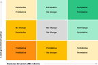

5 Conclusion and further discussion
New Zealand suffers from long delays between project planning and delivery. The Infrastructure New Zealand commissioned Principal Economics to provide an assessment of the economic impact of an efficient infrastructure investment process.
Inefficiencies in infrastructure decision making process leads to:
overuse, congestion and eventually dampened economic growth.
forgone economic opportunities and household wellbeing.
interrupted supply of infrastructure services driven by lack of sequencing, which leads to increased costs to service providers from labour turn-over and capital depreciation.
This report provides further discussion about the importance of efficient decision making and potential next steps, and provides an estimate of:
The wider economic benefits (WEBs) from the cost efficiencies resulting from the improved decision process.33 This includes the agglomeration benefits resulted from efficient collaboration of labour force within and between firms using the improved infrastructure, for example.
The economy-wide benefits from improved efficiency using a better decision process. This includes the flow-on effects that account for the interactions between businesses, households, and the government.
Wellbeing impacts to New Zealand communities.
While each infrastructure project is different, and require separate economic evaluation, our case study aims to provide a ballpark figure for the upstream and downstream costs associated with a slow infrastructure decision making process. To provide an estimate of the likely social cost of delays in infrastructure decision making, we used Waikato Expressway (the Expressway) as the case study of this analysis.
We used our subregional CGE model to estimate the downstream benefits of the Expressway. The high-level results of our analysis are shown in Figure 1. Accordingly, the annual benefits of having the Expressway in the economy is equal to $281 million. In addition to that there are positive safety impacts of $53.35 million. Hence, the total economic benefit of the Expressway is equal to $334 million.
The planning timeframe in New Zealand is longer than Australia. There are a range of examples, that we have referred to in this report. Accordingly, we suggest that there is a potential for significant time saving in the IDM’s planning process, from the current 15 years to 8 years.
If we assume that the Waikato Expressway would have been completed 14 years earlier, the New Zealand economy would have saved a total of $2.3 billion. Compared to a total cost of almost $1.9 billion, the IDM delays have led to forgone benefits of 1.2 times the total capital cost of the Waikato Expressway.
Delays are caused by a range of uncertainties at the planning phase, including demographic and population, macroeconomic, technological, climate change, and political uncertainties. There are a range of regulatory changes and policy framework intending to address this costly issue. This includes the directions provided by the Infrastructure Strategy, Resource Management reform, and the National Policy Statement on Urban Environment (NPS-UD 2020). Most importantly we suggest the following objectives have significant implications for the delays in the planning phase:
To improve transparency through providing national direction, and inclusivity through local devolution
To increase the quality of advice through careful considerations of scenarios and pathways, and by accounting for separation and sequencing of options
We further discuss the direction of policy frameworks and their impact in the next section.
5.1 The direction of policy frameworks
In this section we refer to the most relevant policy frameworks. As discussed above, there is a need for improved investment decision making processes. The recent developments in the policy frameworks attempt to address some important issues to improve certainty, which leads to time savings in decision-making processes.
5.1.1 National Policy Statement on Urban Development (NPS-UD)
The NPS-UD34 provides guidelines for improving the competitiveness of urban land markets by increasing the responsiveness of development to local land price changes (MfE & HUD, 2020). A more competitive land market will reduce the monopoly power of landowners, increase competition between locations across a city and is expected to result in lower land values. To achieve this, the NPS-UD requires regional councils to undertake an analysis of demand and supply (housing capacity) by accounting for the availability of different types of infrastructure. This informs the Housing and Business Capacity Assessments of housing affordability and sufficiency. The findings from the assessment informs the urgency of changes in planning and infrastructure plans and ensures that the right infrastructure is provided in the right place at the right time, which provides adequate access to economic and social opportunities and enables people to maximise their wellbeing.
The NPS-UD requires local councils to provide sufficient feasible development capacity in resource management plans and support that with infrastructure.35 The NPS-UD uses the Future Development Strategy (FDS) process to ensure that the planning processes provide enough development capacity to meet future growth needs. The objectives of the FDS are to:
Improve the alignment between spatial planning and land-use and infrastructure planning36
Inform RMA plans and other relevant legislation
Promote a well-functioning urban environment, informed by the values of iwi and hapū
The FDS tasks councils to provide information about the location of future development and timing of infrastructure investment. The objective of the FDS is to minimise infrastructure costs and prevent severe rises in house prices. To achieve this, the NPS-UD recommends developments in areas with high accessibility to jobs, urban amenities and transport technologies. This is consistent with the housing-specific objectives of the RM reforms to provide the right infrastructure, in the right place at the right time, that provides adequate access to economic and social opportunities and enables people to maximise their wellbeing.
5.1.2 Resource Management Act (1991) (RMA)
The RMA contains a number of specific environmental regulations that councils must implement. For example, Section 6 requires councils to recognise and provide for “the protection of areas of significant indigenous vegetation and significant habitats of indigenous fauna”. In practice, this is done using “Significant Ecological Area” overlays that, once in place, restrict the range of development activities that can occur.
The RMA also provides a framework for the implementation of many of the planning regulations with potential dampening impacts on economic growth. However, it is not possible to determine which of these regulations are required by the RMA and which are simply the result of council decision-making. 37 Neither is distinguishing between those regulations that are motivated by environmental concerns and those that are intended to serve other purposes. The primary impact of the RMA is through land-use regulation, which affects urban growth boundaries (at the periphery of the city), and the resource consent’s level of permission for different activities.
Urban boundaries offer one example. While the RMA does not explicitly require councils to impose urban boundaries, councils might argue that such boundaries are necessary to achieve the purpose of the Act, being the “sustainable management of natural and physical resources”. Whether urban boundaries are “environmental regulations” is also debatable. To the extent that they reduce transport emissions or the sealing over of peri-urban land, urban boundaries could be seen as environmental in nature. That said, councils have often chosen to impose urban boundaries for other reasons, such as minimising infrastructure expenditure (and operating costs of inefficient transport services).
The RM Reform will improve transparency, which improves consistency with objectives of the NPS-UD. However, it will take some time to see the benefits.
Resource Economics, Principal Economics and Sapere (2021) assessed the impact of the Government’s proposed reform of the resource management (RM) system (RM reform). They discussed that the outcomes of councils’ planning regulation (driven by the NPS-UD), if accompanied by a permissive and transparent RM system, can lead to improved housing market outcomes compared to those from the NPS-UD alone. As shown in Figure 13, the combination of the features of the RM system and their interactions with the councils’ regulation may lead to a wide range of outcomes for the housing market.
Figure 13 Combined impact of RM system and planning regime

Source: Principal Economics
The NPS-UD and RM reforms are highly aligned in their objectives. The outcomes of councils’ planning regulation (driven by the NPS-UD), if accompanied by a permissive and transparent RM system, can lead to higher benefits than those from the NPS-UD alone. The RM Reform objective is to improve system efficiency and effectiveness, and reduce complexity, while retaining appropriate local democratic input (New Zealand Government, 2021). To achieve this, a range of policy changes are proposed in the reforms, including:38
- Providing more national level direction to decrease the chance of negative externalities from one region’s urban growth on other regions
- Decreasing the number of Acts to resolve any potential inconsistencies across different pieces of legislation leading to a higher certainty level
Based on New Zealand Government’s (2021) proposed changes, the expected improvements from the RM reforms include:
Greater use of mandatory national direction by the Minister for the Environment to guide local government. A more certain regulatory framework that will lead to higher certainty around zoning regulations.39 The housing objectives of the RM reforms are consistent with the NPS-UD but will lead to a more substantial regulatory framework expected to produce structural changes to local governments’ regulations (and regulatory power) and, ultimately, change the shape of New Zealand metropolitan and rural areas.
Improvements to resource consents and consent processes, including:
Providing greater clarity about notification of consent applications
An alternative process to deal with consents for small, localised issues;
An improved ability to have more serious disputes over consents referred directly to the Environment Court
Improving the ability of regional councils to modify or extinguish resource consents where environmental limits are threatened; and
Enabling territorial authorities to change land use consents to implement a managed retreat process as part of adapting to climate change.
More flexible housing supply. National direction is expected to be more focussed on permissive regulation, allowing more flexibility in housing supply. Furthermore, environmental limits are expected to result in more housing intensification. This is more significant in land-scarce regions, particularly Auckland. Given the long-term impact of RM reform, the other regions are likely to feel the impacts more significantly in the next decades.
The impacts of RM system and NPS-UD are complementary. The objectives of NPS-UD, which are based on the RMA, are similar to the objectives of the Government’s proposed reform. This is shown in Table 9 based on the initial objectives indicated by New Zealand Government’s (2021) proposed changes; that is, these are indicative at this stage.
Table 11 TERM sourcing mechanism
| Outcomes | NPS-UD & RMA | RM reform |
|---|---|---|
| Affordability |
NPS-UD has a range of recommendations that contribute to housing supply elasticity, including:
|
|
| Choice |
Improving housing choice through:
|
Increased housing supply to better meet residents’ demand for housing (by type, size, location and price) |
| Māori participation | Recognise Te Tiriti and contain provisions aiming to enable Māori participation in the system |
|
| Climate change | Better prepare for adapting to climate change and risks from natural hazards, and better mitigate emissions contributing to climate change | A reduction in transport carbon emissions versus the status quo from more efficient land use patterns through improved spatial planning |
| Improved System performance | Focused on improving effectiveness of planning regulations | Improve system efficiency and effectiveness, and reduce complexity, while retaining appropriate local democratic input |
Source: Principal Economics based on Cabinet papers (MfE, 2021).
5.1.3 Direction of change and other relevant policy frameworks
The policy frameworks share a common target of achieving productivity, inclusivity and sustainability (New Zealand Government, 2020, p. 4). As discussed above, a range of recent policy documents are focused on addressing important drivers of delays in infrastructure decisions. This approach will help to improve outcomes in the coming years.
Transparency through providing national direction, and inclusivity through local devolution
The RM reform includes a new national planning framework’s (NPF), which will provide greater (mandatory) national direction. Consistent with the objectives of NPS-UD, the NPF will lead to improved prioritisation of national outcomes and better governance of potential negative externalities. National direction and more clear legislation leads to decreases in consenting cost, which translates into allocative efficiencies.
There has also been significant emphasis on impact of infrastructure decisions on communities. The objectives of the RM reforms are to improve system efficiency and effectiveness and reduce complexity. This leads to retaining appropriate local democratic input. There has been significant emphasis on the importance of equity issues in (housing and transport) infrastructure decisions. This is reflected in NPS-UD’s requirements for local councils to decompose their capacity assessment for different population groups, and in the recent work of Waka Kotahi on equity impacts of infrastructure decisions (Principal Economics, 2022b).
Quality of advice leads to improved timing of infrastructure decisions through careful considerations of scenarios and pathways, and by accounting for separation and sequencing of options
As discussed, the investment frameworks guided by the Better Business Case (BBC) approach recommended by the Treasury provide a robust assessment framework for infrastructure projects. Different agencies have been working on identifying and providing guidelines for accurately addressing uncertainties in their investment frameworks. The outputs provide useful information for the planning phase, to ensure accelerating informed decision-making.
For example, Waka Kotahi’s recent developments of the appropriate approach for capturing distributional impacts of transport investments provides useful information for addressing a range of political uncertainties raised from inter- and intra-general equity issues (Principal Economics and ECPC, 2022).
As discussed, uncertainties are an important reason for delays. We suggest that agencies need to consider a wider range of scenarios (scenario planning) and potential pathways within the strategic case, in the development of Programme Business Case and Single Stage Business Case (SSBC); for details, see Figure 3. These must then be accompanied by a robust economic evaluation (CBA). The consideration of a wider range of scenarios ensures flexibility to respond to different situations as they arise.
Currently, government agencies are in the process of developing their response to climate change, which is considered as a case of deep uncertainty.40 For example, Principal Economics (2022a) provided suggestions on how an adaptive decision-making (ADM) approach to climate change can be used for evaluating economic land transport activities in New Zealand and be incorporated into Waka Kotahi’s Investment Decision Making Framework (IDMF). We suggest further consideration of different levels of uncertainty and Adaptive Decision Making in different policy frameworks to support flexibility in decision-making.
Te Waihanga – Infrastructure Commission’s Strategy provides a comprehensive list of potential improvements in the decision-making process. (New Zealand Infrastructure Commission, 2022, pp. 183–190).
5.2 Limitations of our analysis
There are potential economic benefits that arise from interdependencies between closely related infrastructure projects. This is important in the context of this project because an IDM delay leads to delays in interdependent projects. Potential additional benefits will be generated by implementing a package of projects, or considering a programme instead of a project, which will be greater than the sum of the benefits of the individual projects in the package. In our meetings with the stakeholders, they referred to the importance of the interdependencies. We suggest further investigation of this in a future study.41
Wider economic effects are usually not directly captured in a typical economic impact framework and includes outcomes such as agglomeration benefits, tax revenues from labour markets, and changes in outputs in the imperfectly competitive markets.↩︎
The National Policy Statement on Urban Development Capacity 2016 was replaced by the NPS-UD in 2020.↩︎
Providing feasibility analysis of urban development capacity is a requirement for high- and medium-growth local authorities.↩︎
This is consistent with previous reports calling for positioning higher density developments along existing transport infrastructure; see, for example, Brebner (2014).↩︎
Zoning land is not a requirement of RMA, but it is a basic technique for controlling land use.↩︎
We only refer to the most relevant changes from the RM reforms. There are a wider range of changes, which will also lead to improved outcomes for the planning phase of the IDM.↩︎
Zoning land is not a requirement of RMA but it is a basic technique for controlling land use.↩︎
Deep uncertainty occurs when decision-makers and stakeholders do not know or cannot agree on how likely different future scenarios are. Climate change is commonly mentioned as a source of deep uncertainty (Marchau, Walker, Bloemen, et al., 2019).↩︎
For further details on interdependencies, see Byett (2017).↩︎